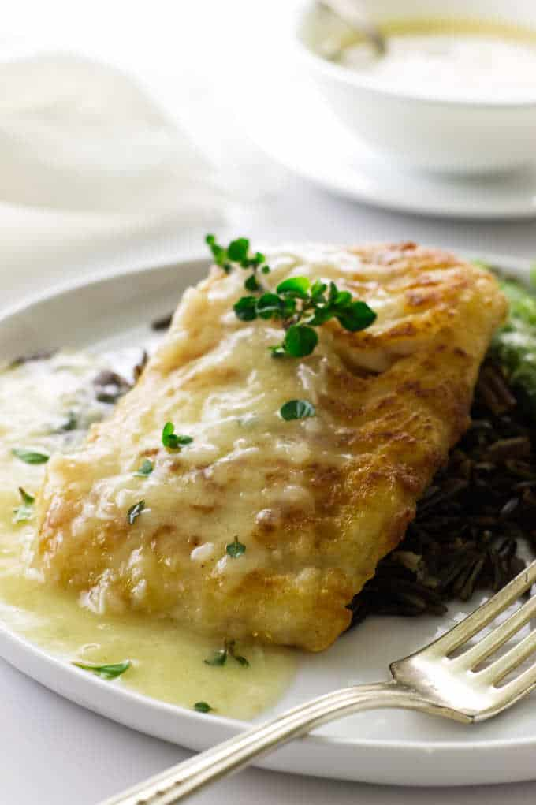

Pan-Seared Lemon Garlic Cod

Description
Elevate your seafood dining experience with this exquisite Pan-Seared Lemon Garlic Cod recipe. Delicate cod fillets are seasoned to perfection with zesty lemon, aromatic garlic, and a medley of complementary herbs. The tender fish is then gently pan-seared to achieve a crispy, golden-brown crust, while keeping the flesh moist and flaky. This dish is a true celebration of the ocean's bounty, bringing the refreshing flavors of the sea straight to your plate.
Ingredients
- 4 cod fillets (6-8 ounces each), skinless and boneless
- 2 tablespoons olive oil
- 2 tablespoons unsalted butter
- 4 garlic cloves, minced
- Zest of 1 lemon
- Juice of 1 lemon
- 1 teaspoon dried thyme
- 1 teaspoon dried oregano
- Salt and pepper
- Fresh parsley, chopped (for garnish)
- Lemon wedges (for serving)
Steps
- Start by patting the cod fillets dry with paper towels to remove any excess moisture. This step ensures a better sear and prevents the fish from becoming soggy.
- In a small bowl, mix together the minced garlic, lemon zest, dried thyme, dried oregano, salt, and pepper. Rub this flavorful herb mixture all over the cod fillets, ensuring each piece is evenly coated. Allow the seasoned cod to rest for about 10-15 minutes to let the flavors meld.
- Heat olive oil and butter in a large skillet over medium-high heat. Once the butter has melted and the pan is hot, carefully place the seasoned cod fillets into the skillet.
- Cook the cod for about 3-4 minutes on each side or until the fish is cooked through and easily flakes with a fork. The exterior should turn a beautiful golden-brown color, providing a delightful contrast to the tender white flesh inside.
- While cooking, drizzle fresh lemon juice over the cod fillets, adding a burst of citrusy brightness to the dish.
- Once the cod is perfectly cooked, remove the fillets from the skillet and transfer them to a serving platter.
- Garnish the Pan-Seared Lemon Garlic Cod with chopped fresh parsley for a pop of color and an herbal aroma.
- Serve the cod alongside lemon wedges, allowing your guests to squeeze additional lemon juice over the fish according to their preference.